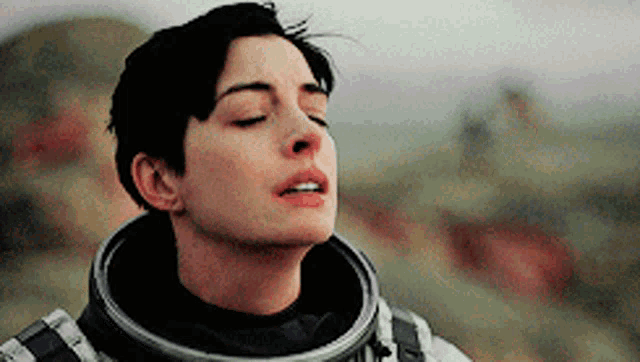

“Aquilo que se faz por amor está sempre além do bem e do mal” — Nietzsche
“O amor é a única coisa que conseguimos perceber que transcende as dimensões do tempo e do espaço” — Interestelar
Antes que diga que eu não fiz isso, eu te conheci no Litmatch, linda.

Voltar